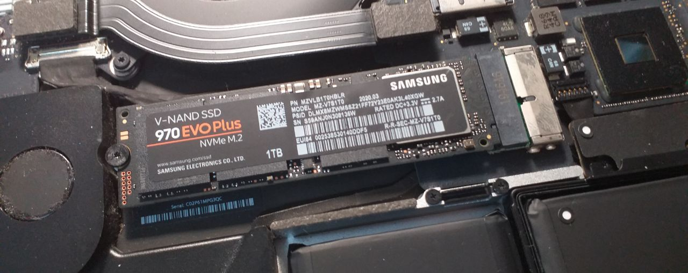
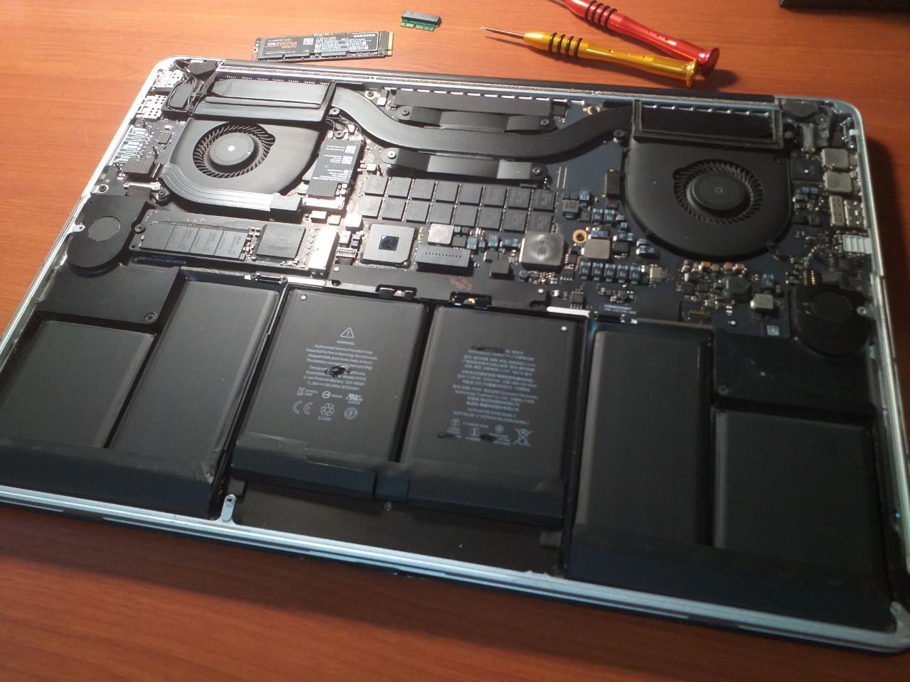
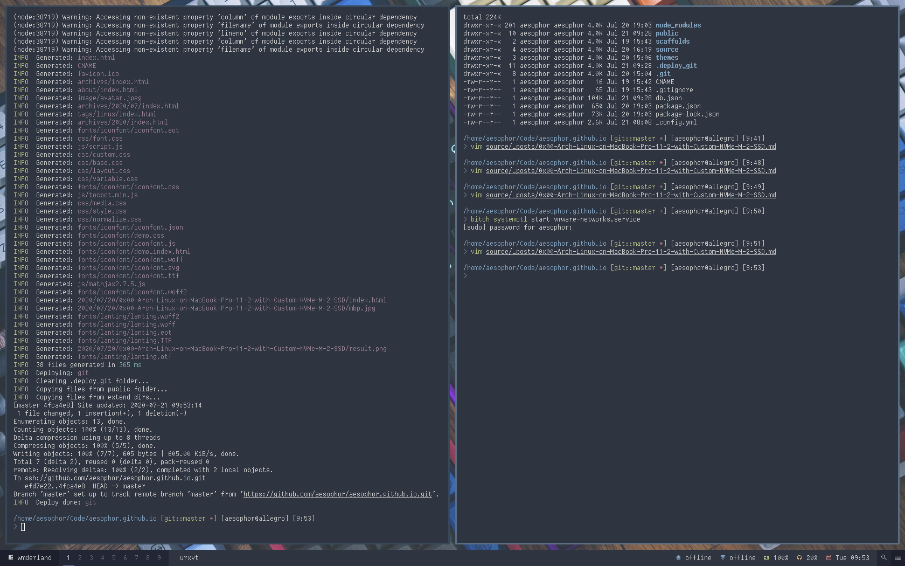

# Introduction
The only laptop I own is Apple’s MacBook Pro Retina 15" (late 2014), on which I’ve run Gentoo Linux for about three years. Recently, I replaced my MacBook’s SSD with Samsung’s 970 EVO Plus NVMe M.2 SSD (1TB) and decided to install Arch Linux on it.
# Back Up the Old SSD
I booted into a Gentoo Live USB and used dd to back up my entire old SSD to an image file.
root$ dd if=/dev/sda of=/mnt/external_drive/old_ssd.img bs=4M
Later on, after the new NVMe M.2 SSD has been installed, I could mount my external hard drive on /mnt/external_drive and run the following commands to copy all my data from the image file to the new SSD. The only drawback of this approach is that I have to manually resize the partitions later.
root$ dd if=/mnt/external_drive/old_ssd.img of=/dev/nvme0n1 bs=4M
# Firmware Upgrade
Before installing NVMe M.2 SSD on your MacBook, make sure that you’ve upgraded to macOS Mojave which includes the firmware required to boot from NVMe M.2 SSD.
# SSD Upgrade
CAUTION
Be very careful with the screws. I stripped some of my screws due to the bloated batteries, and ended up spending $3000 NTD (approx. $100 USD) for repairment.
After upgrading to macOS Mojave, your MacBook should be able to recognize NVMe M.2 SSD from now on. Now we can remove the screws on its back and install the new SSD. I bought the Screwdrivers + SSD Adapter on shopee.tw -> Link

# SSD Data Migration
After upgrading my MacBook’s SSD, I installed macOS on it and used it for a week. However, being a long-term GNU/Linux user, I started to miss all that freedom and customizability offered by Linux. Therefore, I decided to go back to Linux again.
At first I used dd to clone all my data from the image file to the new SSD. However, this didn’t work for me, since I didn’t compile support for NVMe M.2 SSD into my gentoo linux kernel, so although the disk was successfully migrated, I wasn’t able to boot from it.
# Prepare Installation Medium
Instead of trying to recompile a new linux kernel with NVMe M.2 SSD support, I decided to leave Gentoo Linux this time. Gentoo is a beautiful Linux distribution (if you have time and patience), but after manually compiling all those packages for 3 years on this fucking MacBook, I’ve already become kinda fed up with it.
Download Arch Linux ISO and prepare Arch Live USB:
root$ dd if=/path/to/arch.iso of=/dev/sdX bs=4M
Power off your MacBook, insert the USB stick, hold alt/option and power it on again. Now you should see the option to boot from Arch Linux Live USB.
# Base Installation
After booting from Arch Linux Live USB, you’ll be logged in as the root user. To get Internet connection, I simply plugged my Android phone into my Macbook simply via USB cable, turned on USB Tethering , and ran:
root$ dhcpcd
Ensure the clock is accurate:
root$ timedatectl set-ntp true
Run cfdisk /dev/nvme0n1 and partition the new SSD as follows:
Disk: /dev/nvme0n1
Size: 931.53 GiB, 1000204886016 bytes, 1953525168 sectors
Label: gpt, identifier: 85CF6A21-FC5C-408D-8532-8751C80F0593
Device Start End Sectors Size Type
/dev/nvme0n1p1 2048 411647 409600 200M EFI System
/dev/nvme0n1p2 411648 1953525134 1953113487 931.3G Linux filesystem
Now run lsblk and you’ll see something like this:
NAME MAJ:MIN RM SIZE RO TYPE MOUNTPOINT
nvme0n1 259:0 0 931.5G 0 disk
├─nvme0n1p1 259:1 0 200M 0 part
└─nvme0n1p2 259:2 0 931.3G 0 part
Prepare LVM+LUKS on the new SSD:
root$ cryptsetup -v --cipher aes-xts-plain64 --key-size 256 --hash sha1 --iter-time 1000\
--use-random --verify-passphrase luksFormat /dev/nvme0n1p2
root$ cryptsetup luksOpen /dev/nvme0n1p2 lvm
root$ pvcreate /dev/mapper/lvm
root$ vgcreate vgcrypt /dev/mapper/lvm
root$ lvcreate --size 30G --name root vgcrypt
root$ lvcreate --extents +100%FREE --name home vgcrypt
root$ mkfs.fat -F32 /dev/nvme0n1p1
root$ mkfs.ext4 /dev/mapper/vgcrypt-root
root$ mkfs.ext4 /dev/mapper/vgcrypt-home
Now run lsblk again and you’ll see something like this:
NAME MAJ:MIN RM SIZE RO TYPE MOUNTPOINT
nvme0n1 259:0 0 931.5G 0 disk
├─nvme0n1p1 259:1 0 200M 0 part
└─nvme0n1p2 259:2 0 931.3G 0 part
└─vgcrypt 254:0 0 931.3G 0 crypt
├─vgcrypt-root 254:1 0 30G 0 lvm
└─vgcrypt-home 254:2 0 901.3G 0 lvm
Mount the partitions:
root$ mount /dev/mapper/vgcrypt-root /mnt
root$ mkdir -p /mnt/home
root$ mkdir -p /mnt/boot
root$ mount /dev/mapper/vgcrypt-home /mnt/home
root$ mount /dev/nvme0n1p1 /mnt/boot
Install the base system:
root$ pacstrap -i /mnt base base-devel linux linux-firmware lvm2
Generate fstab:
-Lgenerates the fstab with labels instead of UUIDs since we’re using encrypted LVM disk.-pprevents pseudo-filesystems from being added.
root$ genfstab -L -p /mnt >> /mnt/etc/fstab
root$ cat /mnt/etc/fstab
# Configure the New System
Chroot into our new system:
root$ arch-chroot /mnt /bin/bash
Generate locales:
- uncomment the locales you’re going to use in /etc/locale.gen, and run
locale-gen. - run
echo LANG=en_US.UTF-8 > /etc/locale.confto make ENG UTF-8 the default locale.
Replace the default console font with terminus:
root$ pacman -S terminus-font
root$ echo FONT=ter-v24n > /etc/vconsole.conf
Set timezone and set time to UTC:
root$ ln -sf /usr/share/zoneinfo/Asia/Taipei /etc/localtime
root$ hwclock --systohc --utc
To ensure the kernel loads the proper modules to decrypt root disk at startup, we have to add necessary hooks in /etc/mkinitcpio.conf :
HOOKS="base udev autodetect keyboard keymap modconf block consolefont encrypt lvm2 filesystems fsck"
Regenerate the initramfs image to EFI Partition ( /dev/nvme0n1p1 ):
root$ mkinitcpio -p linux
Set hostname:
root$ echo allegro > /etc/hostname
Install systemd-boot as our bootloader:
root$ pacman -S dosfstools
root$ bootctl --path=/boot install
Add an boot entry for systemd-boot by editing /boot/loader/entries/arch.conf :
title Arch Linux
linux /vmlinuz-linux
initrd /initramfs-linux.img
options cryptdevice=/dev/nvme0n1p2:vgcrypt root=/dev/mapper/vgcrypt-root rw
Change root user’s password:
root$ passwd
Install additional packages:
root$ pacman -S dhcpcd git zsh vim neovim wget stow tmux
Reboot:
root$ reboot
Add an unprivileged user:
root$ useradd --create-home --groups wheel --shell /bin/zsh aesophor
root$ passwd aesophor
Set up sudo:
- run
visudoand uncomment the line%wheel ALL=(ALL) ALL.
At this point, you may logout the root user and re-login with your unprivileged user.
# Post Installation
Install yay , an AUR helper:
user$ git clone https://aur.archlinux.org/yay.git
user$ cd yay
user$ sudo makepkg -si
Install X and video drivers:
user$ sudo pacman -S xf86-video-intel mesa-libgl libva-intel-driver libva
user$ yay -S opencl-intel
user$ sudo pacman -S xorg-server xorg-xinit xorg-apps
Install xf86-input-mtrack as our trackpad driver:
user$ yay -S xf86-input-mtrack
user$ sudo wget -O /etc/X11/xorg.conf.d/10-mtrack.conf https://raw.githubusercontent.com/aesophor/macbookpro-11-2-gentoo-config/master/etc/X11/xorg.conf.d/10mtrack.conf
user$ sudo gpasswd -a aesophor input
Install broadcom-wl-dkms as our Wi-Fi driver (my laptop model is A1398):
user$ sudo pacman -S dkms broadcom-wl-dkms
Install bcwc-pcie-git as our FaceTimeHD webcam driver:
user$ yay -S bcwc-pcie-git
Install font packages:
user$ sudo pacman -S ttf-liberation wqy-zenhei wqy-bitmapfont
user$ yay -S siji-git uw-ttyp0-font
Get audio to work:
user$ sudo pacman -S pulseaudio alsa-lib alsa-utils
Install DE, WM, bar, etc:
user$ sudo pacman -S plasma-desktop
user$ yay -S wmderland-git polybar dunst picom rofi-git rxvt-unicode firefox
Install fcitx5 input method:
user$ sudo pacman -S fcitx5 fcitx5-chinese-addons fcitx5-configtool fcitx5-gtk fcitx5-qt fcitx5-material-color
user$ yay -S fcitx5-pinyin-zhwiki
Downgrade pango to 1.43 since >= 1.44 cause issue with font rendering on rofi:
user$ sudo pacman -U https://archive.archlinux.org/packages/p/pango/pango-1.43.0-1-x86_64.pkg.tar.xz
Powersaving:
user$ yay -S powertop thermald cpupower mbpfan-git
user$ sudo systemctl enable thermald.service
user$ sudo systemctl enable cpupower.service
user$ sudo systemctl enable mbpfan.service
Finally, create systemd services that execute the following commands, respectively:
- echo ‘disable’ > /sys/firmware/acpi/interrupts/gpe06 # fix kworker high cpu usage
- echo “XHC1” > /proc/acpi/wakeup # fix immediate wakeup after suspension on macbook
- setpci -v -H1 -s 00:01.00 BRIDGE_CONTROL=0 # enable keyboard backlight control
# Enter X11
Install my dotfiles:
user$ git clone https://github.com/aesophor/dotfiles.git ~/Dots
user$ cd ~/Dots
user$ rm ~/.zshrc ~/.bashrc
user$ ./.install.sh
Start an X11 session (GUI) as your unprivileged user:
user$ startx
Voilà. Now you can go ahead and start customizing it!
